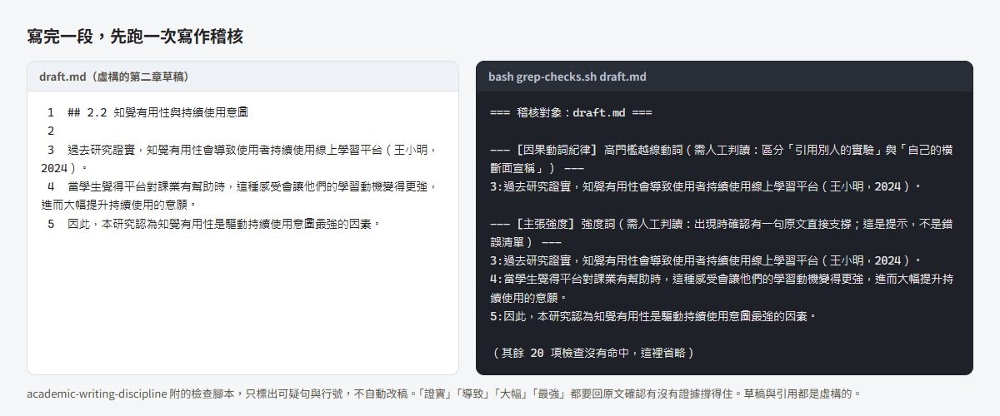

論文各階段用什麼：整合入口
從找文獻到口試，每個階段對到哪個 SKILL、提示詞、筆記庫範本與本站頁面，附取得新版的方式
這頁把本站和另外五個工具串成一條論文流程，從找題目到口試後修訂，每一站對到一頁說明、一個工具和一個要回原文核對的地方。先在第三節找到你卡住的那一列，照那一列做就好。每一站在網頁版和 Claude Code／Codex 兩條路線各用什麼，見論文 AI 工作流全圖。
一、用 AI 寫論文常卡住的地方
- 引用對不上原文。AI 寫的句子看起來有出處，回 PDF 才發現作者沒這樣說，或把別的變項的數字套了上來。
- 文獻多到管不住。讀了三十篇，筆記散在好幾個地方，寫第二章時想不起那句話出自哪一篇。
- 不知道哪一步該用什麼。每個工具都說能幫你寫論文，很少有人說它該用在哪一步、用完哪裡要自己核對。
- 論文寫一兩年，每次開新對話都要把進度從頭講一遍。
二、這套流程做什麼
把論文分成五站，每站給你一頁說明和一個現成的工具，再標出 AI 給的東西要回哪份原文核對。找文獻、整理筆記、檢查邏輯和文字可以交給 AI，判斷和負責的人是你。
| 資源 | 做什麼用 | 說明網址 |
|---|---|---|
| mis-thesis-guide | 研究方法與論文寫作的知識庫，查觀念、查判準，也有提示詞範本 | https://wayhong0928.github.io/mis-thesis-guide/ |
mis-thesis-skills（內含 plugin thesis-toolkit） |
讓 Claude Code 照固定判準稽核研究題目與寫作，另有流程導覽 SKILL | https://github.com/wayhong0928/mis-thesis-skills，沒有獨立介紹網站 |
| thesis-notes-template | 下載就能用的 Obsidian 論文筆記庫：五種筆記模板、填寫規則、文獻矩陣、給 AI 的提示詞 | 介紹頁 https://wayhong0928.github.io/thesis-notes-template/，說明頁見論文筆記庫範本 |
| md-to-slides | 用 Markdown 寫簡報，挑場合和主題就有一份範例可以改 | https://wayhong0928.github.io/md-to-slides/ |
| claude-workflow-template | Claude Code 的工作流程設定：接續進度、派工模板、獨立驗收。制度怎麼運作寫在它自己的網站，這裡不重寫 | https://wayhong0928.github.io/claude-workflow-template/ |
| ai-agent-notes | Claude、Codex 這類 AI 代理工具的概念、設定和協作方式 | https://wayhong0928.github.io/ai-agent-notes/ |
三、你卡在哪一站
- 找題目thesis-toolkit
- 讀文獻論文筆記庫範本
- 設計與分析論文筆記庫範本
- 寫論文thesis-toolkit
- 口試與修訂md-to-slides
| 卡住的時候 | 先看 | 用這個工具 | 回原文核對 |
|---|---|---|---|
| 碩一下，老師說題目自己想 | 從零開始第二節、第九節；研究問題、假說與研究架構 | thesis-toolkit 的 research-direction-finding、research-question-audit |
AI 提的方向要能指到真實存在的文獻，帶著那幾篇去跟指導教授談 |
| 讀了三十篇，文獻探討還是寫不出來 | 論文筆記庫範本、接上 Zotero 與 Obsidian、學術倫理與 AI 揭露 | 論文筆記庫範本 | 數字、頁碼、構念名稱回 PDF 逐項打勾 |
| 要發問卷，量表要改編 | 問卷調查法 2.1、4.2 | 論文筆記庫範本的 07_模板/06_方法.md |
操作型定義和量表題項回原始論文核對，不用 AI 轉述的版本 |
| 統計跑完看不懂，或老師說數字不對 | 問卷調查法 3.3、6.3；量化分析規劃與資料處理基礎 | 無 | AI 對結果的解讀，回你自己的輸出表逐項對 |
| 用 AI 寫了一段，老師說引用對不上 | 論文 AI 工作流全圖、實例第四節、學術倫理與 AI 揭露第四節 | thesis-toolkit 的 academic-writing-discipline |
每個引用回原文確認作者真的這樣說 |
| 下個月口試 | 計畫書、口試與簡報 | md-to-slides | 質詢清單的每一題都要能指回論文或文獻裡的位置 |
| 口試完拿到一堆修改意見 | 口試後修訂、典藏與結案 | 無 | 修訂時改寫過的句子，引用要再回原文對一次 |
不確定自己在哪一站，可以直接對 Claude Code 說「我論文卡住了，不知道下一步」，thesis-toolkit 的 thesis-roadmap 會判斷階段並指出下一步。
只裝其中一個
| 工具 | 怎麼裝 |
|---|---|
| thesis-toolkit | 在 Claude Code 輸入 /plugin marketplace add wayhong0928/mis-thesis-skills，再輸入 /plugin install thesis-toolkit@mis-thesis-skills。網頁版和 Codex 的裝法見該 repo 的 README |
| 論文筆記庫範本 | 從 GitHub 下載 ZIP 解壓縮，用 Obsidian 打開。有 Claude Code 或 Codex 的話，把範本 00_總覽/prompt.md 第 0 段貼給它，它會連 Zotero 一起裝 |
| md-to-slides | 在網站選場合和主題，下載起手包，用 VS Code 打開 |
| claude-workflow-template | 照它網站上的安裝步驟 |
想一次全部裝好，用整套安裝那段 prompt。
每一步的細項
骨架是 thesis-toolkit 的 thesis-roadmap 判斷的三個階段（找方向、稽核題目、稽核寫法），再加上它列為「thesis-toolkit 不管」的幾項。第 4、5、9 列在 thesis-roadmap 沒有對應的 SKILL，這裡依本站的頁面和筆記庫範本補上可用的資源，補上的部分不屬於 thesis-toolkit。
節號有兩套。「提示詞範本」指AI 提示詞範本的節；「範本 6.x」指論文筆記庫範本第六節的小節。
| # | 階段 | thesis-toolkit 的 SKILL | 提示詞 | 筆記庫範本 | 本站頁面 | 回原文核對 |
|---|---|---|---|---|---|---|
| 1 | 找方向 | research-direction-finding |
提示詞範本 10.1、1.1 | 無 | 從零開始第九節 | AI 提的方向要能指到真實存在的文獻，帶著那幾篇去跟指導教授談 |
| 2 | 稽核題目 | research-question-audit |
提示詞範本 10.2、4.1、4.3、1.3 | 00_總覽/研究設計速查.md |
研究問題、假說與研究架構 | 缺口寫成「在這幾篇裡沒看到」，再到資料庫搜一次 |
| 3 | 找文獻 | 無 | 提示詞範本 2.1、2.2、3.1 | 無 | 怎麼找、怎麼讀、怎麼選題目、AI 學術研究工具指南 | 每篇先確認文獻存在，再下載原文；搜尋工具給的摘要不能當原文引用 |
| 4 | 讀文獻與寫筆記（補） | 無 | 提示詞範本 3.2、3.4；範本 6.1 到 6.3 | 三種文獻筆記模板、文獻筆記填寫規則.md、prompt.md、文獻矩陣.base |
文獻回顧與批判性思考、文獻管理與知識庫、論文筆記庫範本 | 數字、頁碼、構念名稱回 PDF 逐項打勾；範本 6.3 的核對要開新對話 |
| 5 | 構念整理與假說推演（補） | 無 | 範本 6.4 收料進構念卡、範本 6.5 推演卡健檢 | 07_模板/02_變數.md、07_模板/05_假設推演.md |
論文筆記庫範本第六節、研究問題、假說與研究架構 | 隨機點幾個 [[citekey]] 回筆記，看那句話是不是真的在裡面 |
| 6 | 選方法、設計問卷 | 無 | 提示詞範本 5.1、5.2 | 07_模板/06_方法.md |
方法論選擇地圖、問卷調查法 | 操作型定義和量表題項回原始論文核對，不用 AI 轉述的版本 |
| 7 | 統計分析 | 無 | 提示詞範本 5.3 | 無 | 量化分析規劃與資料處理基礎 | AI 對結果的解讀，回你自己的輸出表逐項對 |
| 8 | 寫章節 | academic-writing-discipline |
提示詞範本 10.3、6.1、6.2 | 04_論文草稿（只有說明檔） |
論文架構與各章寫作要領、學術中文寫作紀律 | 橫斷面資料不寫「導致」這類動詞；每個引用回原文確認作者真的這樣說 |
| 9 | 計畫書、口試、簡報（補） | research-question-audit 的對抗式審查 |
提示詞範本 6.3、6.4 | 無 | 計畫書、口試與簡報、學術倫理與 AI 揭露 | AI 揭露照系所和指導教授的規定寫；質詢清單的每一題都要能指回論文或文獻裡的位置 |
| 跨 | 長專案接力、派工、獨立驗收 | 無 | 無 | 無 | 只連 claude-workflow-template 介紹頁，這裡不重寫 | 做的人不驗自己的活，細節見該站 |
thesis-roadmap 只管前面三個稽核 SKILL 對應的階段，其餘的看上面這張表。
第 4 列的閱讀追蹤
筆記範本的每份文獻筆記，frontmatter 都有 status 欄（🌱 剛建立、🌿 充實中、🌳 可直接寫進論文），文獻矩陣.base 把它顯示成「狀態」欄。所以讀文獻時可以這樣追蹤進度：
- 建筆記時先標 🌱，讀完全文、筆記能撐起論文某一句話時才改成 🌳。
- 在
文獻矩陣.base依狀態排序，看哪些還沒讀完。 - 下一篇讀哪篇，從已讀筆記的第九節「值得追讀的參考文獻」挑，回原文核對過就填
verified日期（這是建議做法）。
前兩點是範本本來就有的欄位和表格。第 3 點是站主的建議，範本沒有把它寫成固定流程。
四、核對抓得到什麼錯
下面兩個例子的草稿句都是為了示範寫的，不是哪一篇真實論文的內容。
引用的方向寫反。 假設你請 AI 依筆記寫一句文獻回顧，它寫出「Davis（1989）發現，知覺易用性和使用的相關高於知覺有用性」。這句讀起來很順。回到筆記庫範本附的示範筆記 03_文獻筆記/Davis1989.md，一句話結論寫的是知覺有用性和使用的相關（.63、.85）高於知覺易用性（.45、.59），出處是原文第 2 頁，AI 的句子剛好寫反。只看草稿抓不到這種錯，要回筆記和 PDF 才看得出來。
主張寫得比證據強。 一段虛構的第二章草稿，交給 thesis-toolkit 的 academic-writing-discipline 附的檢查腳本跑一次，結果如下。腳本只標出可疑句和行號，不會自動改稿；「證實」「導致」「大幅」「最強」這幾個詞，要回原文確認有沒有證據撐得住。


站主自己寫論文時，回原文核對抓到的錯列在實例第四節。
五、限制：哪些事不能交給 AI
這套流程能幫你找文獻、整理筆記、核對數字、檢查邏輯和文字，但每篇要寫進論文的文獻，最好自己讀過。AI 寫的筆記照樣會漏東西，也會把原文沒有的話寫進去；你沒讀過原文，就看不出哪裡漏了、哪裡錯了。論文裡每一句話由你負責，口試時被問到的也是你。
第三節每一列的「回原文核對」，意思是 AI 給的東西要回 PDF 或原始資料對過才算數。統計判準與格式慣例依領域和系所而不同，以系所規定和指導教授意見為準。學術倫理與 AI 揭露怎麼寫，見學術倫理與 AI 揭露。
六、兩個附加頁
- 用 Claude Code＋Zotero＋Obsidian 管理文獻與文獻筆記：這套筆記庫怎麼接上 Zotero 和 Claude Code，從裝工具到寫筆記、核對、收料的順序，每一步指到範本和各 README 原本的段落。
- 整套安裝：一段 prompt 裝好論文工作環境：一段貼給你自己的 AI 的安裝 prompt，把筆記庫範本、Zotero、Obsidian 和 thesis-toolkit 裝好，Claude Code 的工作流程設定接到它自己的網站。
七、怎麼取得新版
| 資源 | 更新方式 |
|---|---|
| 本站 | 沒有訂閱機制，各頁改了什麼寫在關於本站的更新紀錄，需要時回來看 |
| thesis-toolkit | 在終端機跑 claude plugin marketplace update mis-thesis-skills 和 claude plugin update thesis-toolkit@mis-thesis-skills；或在 Claude Code 輸入 /plugin，到 Marketplaces 分頁選 mis-thesis-skills，開啟 Enable auto-update。更新後開新 session，或在正在用的 session 輸入 /reload-plugins。Codex 是把 SKILL 資料夾複製到 .agents/skills/ 或建 symlink，複製的要下載新版再複製一次，symlink 的更新它指向的那份就好。各版改了什麼見該 repo 的 CHANGELOG |
| thesis-notes-template | 只換 07_模板/、00_總覽/文獻筆記填寫規則.md、00_總覽/prompt.md。00_總覽/術語表.md 和 00_總覽/研究設計速查.md 是你填過的，不要覆蓋；01_理論 到 06_方法 放的是你的筆記，也不要動。不要把整包新版蓋過去 |
| claude-workflow-template | 照它 README 寫的更新方式 |
換 07_模板/ 之前，如果你自己改過模板，先把改過的檔案另存一份再換，換完再把想留的改動補回去。舊筆記不用重寫，缺的欄位照新模板補上就好。